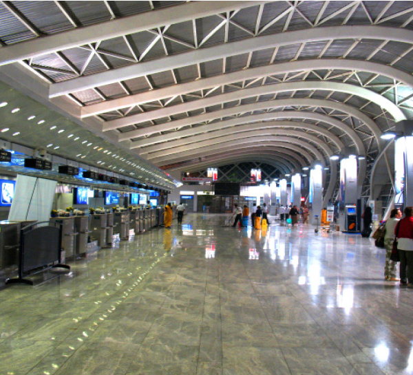

A Preordained Meeting at the Bombay Terminal
The shliach waited in the terminal of the Bombay airport for his flight. Suddenly, he felt a hand on his shoulder – someone he had never met before wanted to speak with him. It turned out that the man had received an amazing answer that morning from the Rebbe MH ” M, thereby closing a thrilling and miraculous circle .
Translated by Michoel Leib Dobry

The siren suddenly blaring through the streets of Kiryat Malachi that fateful Thursday morning was a sign of impending trouble. Shortly afterwards, a terrible tragedy took place. A three-story residential building sustained a direct hit from a Grad missile fired by Hamas terrorists based in the Gaza Strip. Among the four people killed was Mrs. Mira Rut Scharf (may G-d avenge her blood), shlucha of the Rebbe, Melech HaMoshiach in the distant city of New Delhi, India.
She and her husband, Rabbi Shmuel, had come to Eretz Yisroel to visit family and friends. They were looking for a little peace and tranquility, along with an opportunity for their children to enjoy some proper education from established Chabad learning institutions. They felt that it was most important for them to see other Chabad children and the faces of true Chassidim. This is something that usually doesn’t happen the rest of the year in the thick smog and pollution of the capital of what was once the crown jewel of the British Empire.
In addition to their other demanding outreach activities, R’ Shmuel sh’yichyeh and his wife Mira hy”d, were busy with the construction of a kosher mikveh in New Delhi. It was only due to the strength of the m’shaleiach that this project began to take form. It developed brick by brick, a magnificent structure designed to help purify the Jewish People. Every additional ceramic tile brought more joy to the shluchim couple. Every new pipe installed during the mikveh construction energized the hearts of the young Chabadnikim, located in a remote outpost far from any normal Jewish community.
A mikveh construction project demands much toil and great care, regardless of where the shlichus is located – all the more so in a place such as India. The impossible conditions led to an extremely slow and cautious building process. For example, digging pits was done by hand, and the sand was removed by a team of donkeys! Even preparing the concrete was done manually without the standard mixers used in most developed countries. For purposes of halachic supervision, the Chabad House brought mikveh expert Rabbi Grossbaum from the United States. Thus, while the technical problems continued to mount, the Scharfs were delighted that their dream was becoming a reality.
The construction was nearly complete when tragedy struck.
Rabbi Scharf spent several agonizing months in physical rehabilitation for the injuries he suffered in the Grad missile attack. During this difficult period, he made certain that his children, cruelly deprived of their mother, received continuous and loving care.
Despite this unfortunate situation, the Chabad House in New Delhi kept up its operations on a daily basis, around the clock. Replacement shluchim have maintained the institution’s vital services, while R’ Shmuel remained in Eretz Yisroel with his children, as they recovered from their physical and emotional scars. Even as he was confined to his bed, R’ Shmuel continued his intensive fundraising activities on behalf of the Chabad House and its programs.
In fact, the Chabad House has not closed for a single day. This is the will of the Rebbe, and this undoubtedly is what Mira Rut would have wanted.
While the mikveh building is almost finished, its progress has recently stalled. R’ Shmuel has long known that G-d’s ultimate demand from any given individual is no more than his inherent abilities can handle. But his strength had been totally spent, and he was simply unable to continue his fundraising efforts to complete construction on this beautiful and magnificent structure of purity in the heart of New Delhi.
THE REBBE ESTABLISHES THE AMOUNT OF THE DONATION
The wheels of the aircraft touched down in New Delhi, containing the shliach R’ Shmuel Scharf, who had come to his place of shlichus just a few weeks earlier for a series of meetings and to get a first-hand update on the status of local Chabad activities. He also wanted to make a serious reappraisal of the possibility of returning to the Indian capital together with his children.
At the conclusion of his visit, which gave a significant push to his outreach programs, R’ Shmuel headed back to Eretz Yisroel. The plane made a stopover in Bombay, where he prepared to board a different aircraft for the final leg of his journey.
The shliach was spending the intervening time walking around the terminal, when he suddenly felt someone place his hand gently on his shoulder.
“Shalom Aleichem,” came a pleasant voice behind him.
R’ Shmuel turned around and saw a Jewish man standing before him. The shliach could see from the man’s attire that he was a businessman.
“Aleichem Shalom,” R’ Shmuel replied warmly.
The two began a brief discussion, and R’ Shmuel discovered that the man was a respected entrepreneur who spent most of the year on business in India and actively supported the Chabad Houses throughout the country. While the shliach had heard the man’s name before, this was their first face-to-face meeting.
They talked for a little while longer, when suddenly the businessman stopped the conversation and turned to a more serious matter.
“R’ Shmuel, how can I help you?” he asked directly.
The shliach didn’t have to think long. He was very troubled over the situation with the unfinished mikveh. The situation was very discouraging: While the construction was reaching its final stages, a most important component still remained – the filter and purification system for the immersion pool.
“I need a purification system for the mikveh water. As someone who knows his way around India, you are obviously aware of the fact that the water in New Delhi is muddy and polluted, to the point that it’s impossible to immerse in it.”
“How much?” the businessman asked.
“Three thousand dollars,” the shliach replied, forgetting momentarily that there were still a few things left to finish in the building phase.
“Tell me,” the businessman inquired with a strange flicker in his eyes. “When was the last time you were in the Bombay airport?”
The shliach furrowed his brow as he thought for a moment. “I think it was seven years ago.”
The businessman’s expression suddenly changed. His eyes brightened and his whole face shone with excitement.
“I also don’t come into this terminal very often,” he said. “Even when I escorted my mother to the airport, I let her off at the terminal entrance and continued on my way. Today, for some reason, I decided to accompany a friend to the airport and inside the terminal itself – something that I haven’t done for years. A few minutes after we parted from one another, I suddenly meet you in the terminal and you tell me about the urgent need for a filter costing $3,000.”
The shliach nodded his head. Yes, he understood the incredible Divine Providence here, although he had already experienced many occurrences of this type on his shlichus.
Then the businessman suddenly dropped a “bombshell.”
“You won’t believe the answer I received this morning from the Rebbe.”
“From the Rebbe?”
“Yes, indeed,” said the businessman, who was pleased to see the surprised look on the shliach’s face. “I woke up this morning very worried over some major delays in one of my business deals. I didn’t know what to do, and so I decided to write a letter to the Rebbe. I opened the volume of “Igros Kodesh” that I take with me everywhere. The answer was as follows:
Greetings and Blessing!
His Pa”N was received from the pious, charitable, etc., chassid, Rabbi Menachem Shmuel Dovid HaLevi Raichik, to be read at the Tziyon of my holy and revered father-in-law, the Rebbe. Also received is the check with the amount left open in order that I should set the amount as I see fit.
In accordance with the fact that this month is the month of miracles, and these are days of miracles, salvations, and wonders, the amount should be set as per his first charitable contribution, corresponding to all the mitzvos – three thousand shekels.
Furthermore, since our Sages of blessed memory have said that it is a greater mitzvah when it is fulfilled by the person obligated than by his shliach, and the giving of tz’daka must be done specifically with joy and gladness of heart, the check is enclosed herein in order that he can fill it out in his own handwriting, and as mentioned, with joy and gladness of heart, and then return it.
On a related issue, enclosed is a copy of a sicha on the concept of tz’daka and the holidays during this month. May it be G-d’s Will that there shall be fulfilled in him the conclusion of this sicha – ‘And test Me now therewith, etc., give maaser in order that you shall become rich.’
With a blessing for health and success in all his endeavors included in his Pa”N, and with his emphasis on constantly increasing in tz’daka, and as in the teachings from these days of Chanukah – increasing from day to day, and with a blessing for good news in all the aforementioned.
This time, it was the shliach’s turn to be left speechless. The circumstances, the request, even the amount he had “picked out of thin air” (while the cost of the filter was much greater) – everything matched the reply this businessman had received from the Rebbe just a few hours earlier.
It goes without saying that the businessman immediately pledged to give the necessary amount, exactly as the Rebbe himself had requested…
The facility is almost ready for actual usage, only the ‘small jars’ are left to finish, such as setting up the ventilation system and putting the final touches on the building process. Only $4,500 is needed to cover all outstanding expenses.
There can be no question that even Avraham Avinu, who set up his tent in the wilderness and called it by the Name of the Everlasting G-d, can take pride in his shluchim-children, who established an everlasting house, a house of purity, in the heart of this city of idols.
Those interested in giving their support to this project can contact R’ Shmuel Scharf by calling 972-58-670-7700 or sending an e-mail to [email protected].
Menachem Ziegelboim. "A Preordained Meeting at the Bombay Terminal." Beis Moshiach, no. 896 (October 2, 2013).